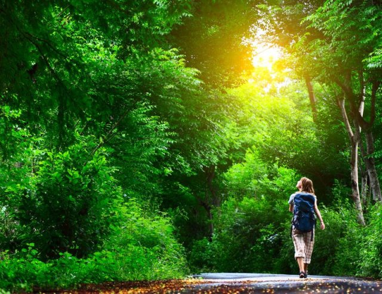

Manche Länder sind Deutschland im Thema Gesundheitsvorsorge um Welten voraus. In Japan gibt es bereits seit 1980 ein anerkanntes Gesundheitsprogramm, das Menschen in den Wald vor die Tür schickt.
Vielleicht hast du schonmal von Waldbaden gehört. Waldbaden bedeutet ohne Ziel, ruhig und gelassen und mit einer Entdeckerbrille aufgesetzt die Natur genießen. Gedanken beruhigen und die heilsamen Düfte der Natur aufsaugen.
Was dadurch im Körper passiert ist faszinierend:
… um mal ein paar der positiven Effekte zu nennen.
Deshalb ist mein Tip: Geh raus und erlebe die Natur!
"Alles, was wir brauchen, um gesund zu bleiben, hat uns die Natur reichlich geschenkt." Sebastian Kneipp
Bereits der bekannte Naturheilkundler und Begründer der Kaltwassertherapie Sebastian Kneipp beruft sich darauf, dass wir ein gesundes Leben in Einklang mit der Natur führen und auf diese Art aktiv vorbeugen und Heilung finden.
Das Waldbaden bekommt auch in Deutschland immer mehr Anerkennung. Ein Drittel der gesamten deutschen Fläche ist mit Wald bedeckt, und bietet somit genügend Möglichkeiten fürs Waldbaden. Wobei auch der Spaziergang auf offenen Feldern, Streuobstwiesen und Stadtparks nachweislich positive Effekte bringen und wir uns dort auch aufgrund des weiten Blicks sehr wohl fühlen.
Klingt doch eigentlich ganz simpel oder?